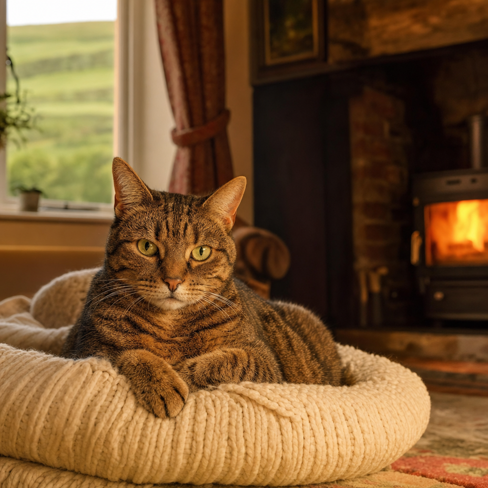
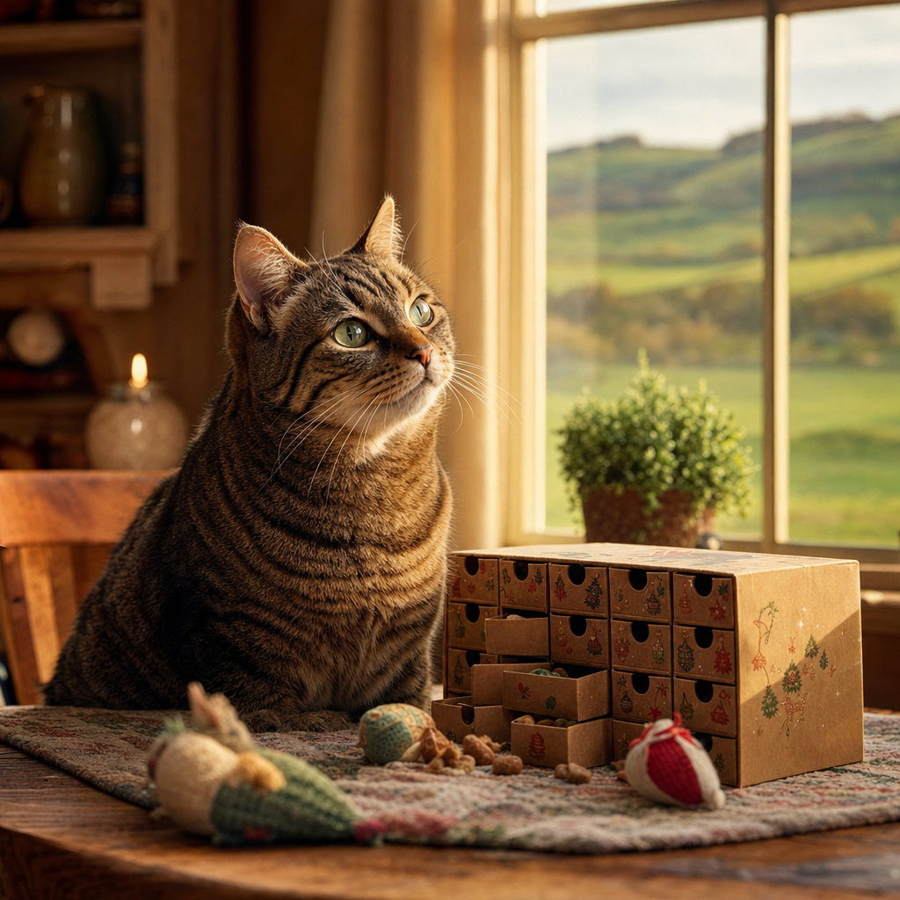
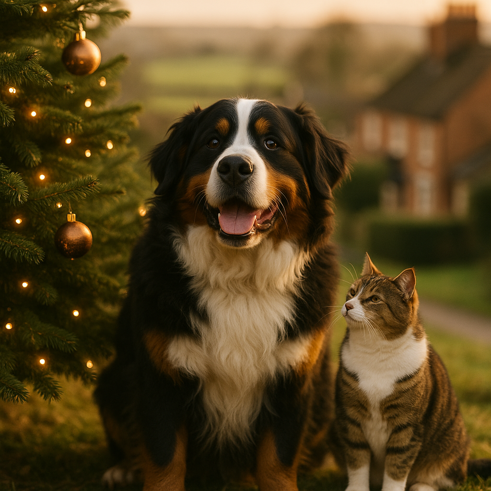
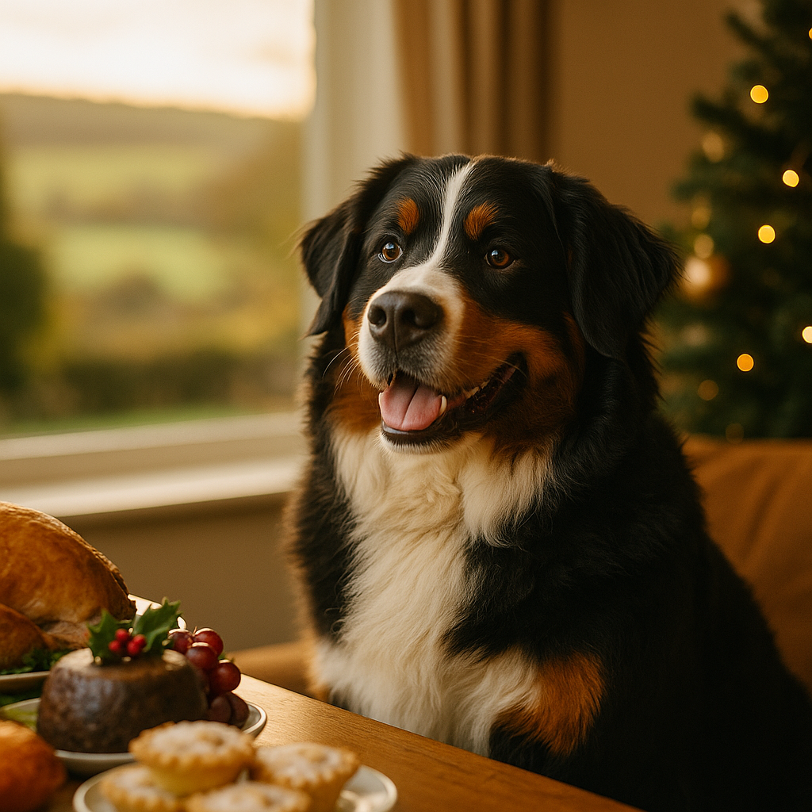
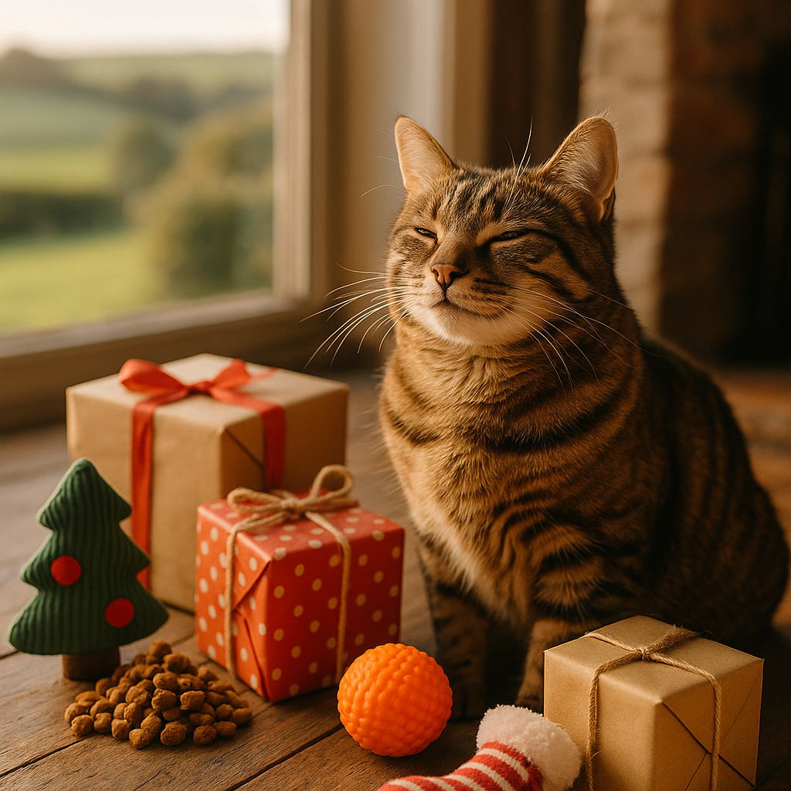

Christmas & Winter
Christmas presents, cold-weather walks, keeping pets warm at night and the seasonal hazards to watch for. Our guides for the winter months.

Dog-Friendly Christmas & New Year Cottage Breaks UK 2026: Where to Book Early
Discover the best dog-friendly cottages for Christmas and New Year breaks across the UK. Early booking tips and top destinations for 2026.

Winter Paw and Pad Care for Dogs and Cats: Salt, Grit and Cracked Pads UK 2026
Protect your dog or cat's paws this winter. Learn how salt, grit and ice damage pads, and the best care tips for UK pet owners.

Best Winter Coats for Dogs UK 2026: Waterproof & Warm Jackets
Find the best winter coats for dogs in the UK. Compare waterproof jackets, fleece liners and styles for small, medium and large breeds.

Best dog and cat advent calendars UK 2026: what's inside, safety and value
Find the best pet advent calendars for dogs and cats in the UK. We review what's inside, safety standards and whether they're worth buying.

Christmas Trees and Cats: Keeping Your Tree and Feline Safe This 2026
Learn how to cat-proof your Christmas tree and protect your feline from festive hazards this season.
Antifreeze Poisoning in Cats: Signs, Treatment and Prevention UK 2026
Learn how to spot antifreeze poisoning in cats, what treatment involves and how to prevent this winter danger in your home.

Christmas Foods Toxic to Dogs and Cats: The Complete UK Safety Guide 2026
Discover which Christmas foods are poisonous to dogs and cats in the UK, plus safe festive alternatives and emergency vet contacts.
Best Christmas Gifts for Dogs UK 2026: Tech, Toys & Treats
Discover the best Christmas gifts for dogs in 2026, from interactive tech to durable toys. Perfect presents for every breed and budget.

Best Christmas gifts for cats UK 2026 - Tech, toys and treats
Find the best Christmas gifts for cats in 2026. From interactive tech to cosy beds, our UK guide covers gadgets that cats actually love.
Find Trusted Providers
All the brands we recommend in this category have been verified for UK customers and offer good value.
Learn about our affiliate approach →